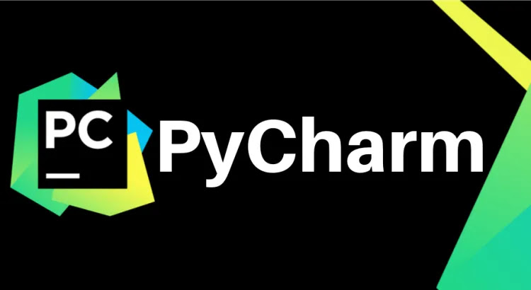
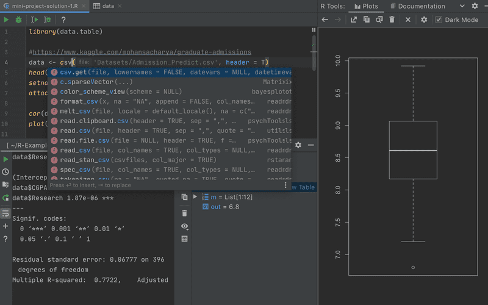
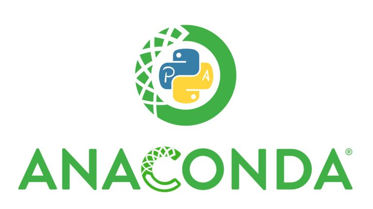
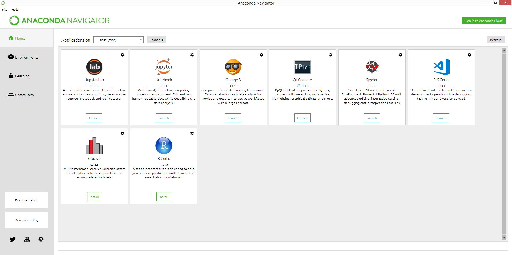
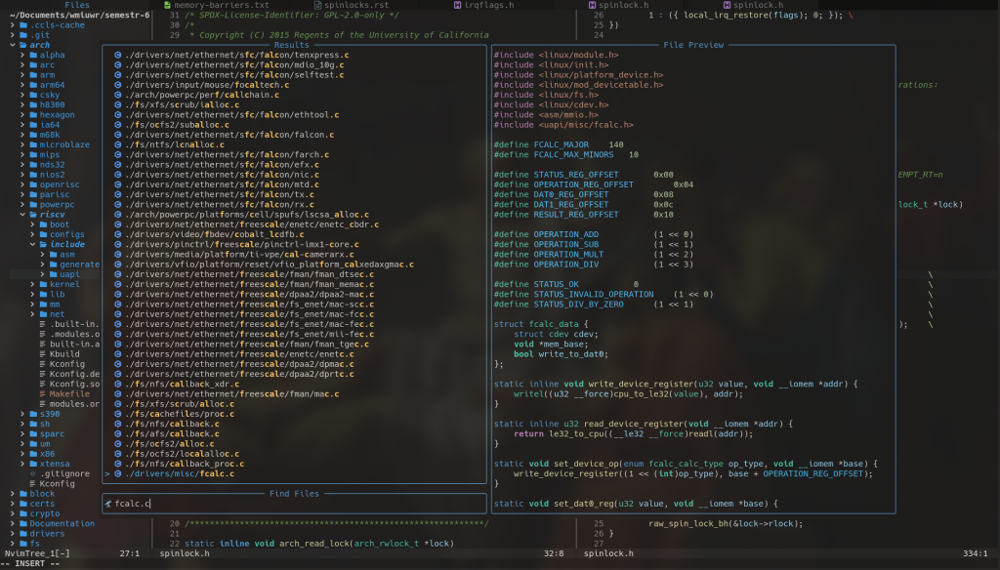
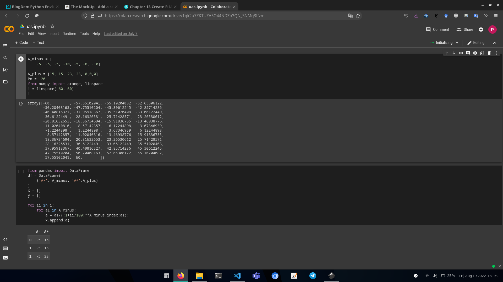
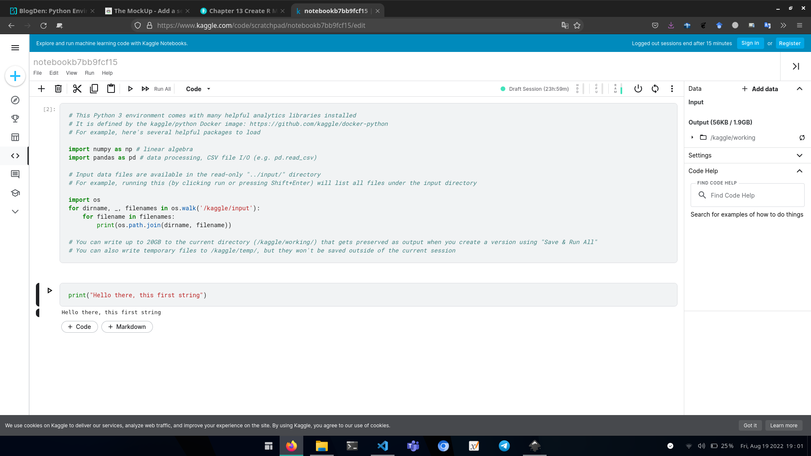

Kepopuleran Python sebagai bahasa yang banyak digunakan pada saat ini tidak lepas dari pengaruh ketersediaan media atau tools yang digunakan untuk pengembangan program Python. Kebanyakan pengguna dapat memilih antara memakai IDE, Code/Text Editor atau menggunakan Online Tools yang dapat dijalankan melalui browser selama terkoneksi dengan internet.
IDE
IDE (Integrated Development Environment) merupakan sebuah software khusus untuk pengembangan program, dilengkapi sekumpulan tools seperti text editor, autocompletion dan debugger. Pengguna terutama mereka yang baru belajar pemrograman cenderung untuk menggunakan IDE karena sudah dilengkapi fitur yang memudahkan mereka fokus untuk membuat program (“What is an IDE?” 2019).
PyCharm

Merupakan IDE keluaran JetBrain yang terdedikasi untuk Python developer. Fitur pada IDE ini berfokus pada penyediaan environment dalam pengembangan Python, web dan data science. Terdapat beberapa pilihan versi IDE yang dapat diambil baik yang open-source maupun yang berbayar. Selain Python, IDE ini juga mendukung bahasa lainnya seperti bahasa HTML, CSS, JavaScript dan R. PyCharm menyediakan plugin tersendiri untuk memudahkan konfigurasi masing-masing bahasa. PyCharm dapat dijalankan pada sistem operasi pada umumnya seperti Windows, Linux dan MacOS. Selama device yang digunakan memiliki 4GB ram, disk space lebih dari 2.5GB hingga resolusi layar minimum 1024x768 PyCharm dapat dijalankan pada device tersebut (“Get started” 2022).

Anaconda

Merupakan IDE Python yang berfokus pada pengembangan data science. IDE ini sudah dilengkapi beberapa libraries yang umum digunakan dalam kegiatan data science seperti numpy, pandas, matplotlib dan scikit-learn. Beberapa fitur menarik telah terpapasang pada IDE ini seperti packet manager Conda yang mudah digunakan untuk instalasi Python libraries serta pengaturan virtual environment. Selain itu juga terdapat Anaconda Navigator yang merupakan aplikasi desktop berfungsi mengatur integrated application, libraries dan python environment tanpa perlu menggunakan Command Line Interface (CLI). Anaconda juga dilengkapi fitur Cloud Environment Backup sebagai mendia penyimpanan local environment. Dari versi distribusi yang tersedia, pengguna dapat memilih open source distribution atau paid version (“Anaconda distribution,” t.t.).

Code/Text Editor
Code Editor merupakan sebuah program yang ditujukan untuk keperluan membuat, mengedit dan menyimpan sebuah berkas program. Berbeda dengan IDE yang memiliki fitur lengkap, code editor lebih sederhana di mana hanya memiliki beberapa fitur seperti code snippet, syntax highlighting dan file navigation. Hal ini menjadikan code editor lebih ringan dibanding IDE serta memiliki tingkat customizable yang tinggi bergantung kepada kebutuhan dan kreativitas pengguna dengan menginstall beberapa fitur melalui plugin atau extension (Talab 2021).
VS Code
Merupakan code editor keluaran Microsoft. Dapat dijalankan pada Windows, MacOS dan linux. Memiliki fitur penambahan extension yang memudahkan pengguna untuk meng-custom code editor sesuai kebutuhannya. Terdapat banyak extension yang tersedia untuk berbagai bahasa pemrograman. Selain itu juga tersedia extension yang berfokus pada workflow seperti git dan tampilan editor seperti color scheme dan icon.

NeoVim
Neovim merupakan code editor berbasis Vim yang didesain untuk ekstensibilitas dan kegunaan serta mendorong pengguna baru untuk ikut berkontribusi (Neovim, t.t.). Merupakan project open source yang dijalankan oleh komunitas untuk mengembangkan neovim menjadi lebih baik lagi. Memiliki banyak plugin yang dapat dipasang untuk memudahkan programmer. Ribuan plugin dapat dilihat pada Vim Awesome. Memiliki ciri khas tidak bergantung pada mouse selama dijalankan dan terdapat banyak shortcut atau key binding yang memudahkan programmer menjalankan tugasnya. Hal ini menyebabkan workflow programmer lebih efisien karena menjaga tangannya tetap berada di atas keyboard.

Online Tools
Google Collaborator dan Kaggle merupakan salah satu contoh platform yang menyediakan environment untuk pengembangan program Python secara online. Dapat dijalankan melalui browser–terlepas dari sistem operasi yang digunakan. Format umum yang digunakan adalah notebook di mana selain menyediakan code block untuk Python juga mendukung syntax markdown untuk keperluan dokumentasi. Media ini cocok digunakan untuk pelajar karena memiliki fitur kolaborasi di mana beberapa pengguna dapat berkontribusi bersama terhadap program yang mereka buat.


Referensi
Reuse
Sitasi
@online{mulyamuhammadsyah2022,
author = {Pandu Mulya Muhammad Syah},
editor = {},
title = {Python Environtmen - Media Utama dalam Pengembangan Program
Python},
date = {2022-08-19},
langid = {id}
}